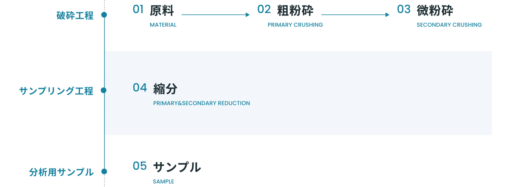
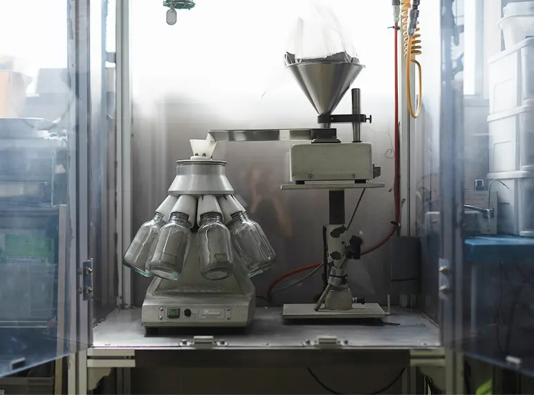
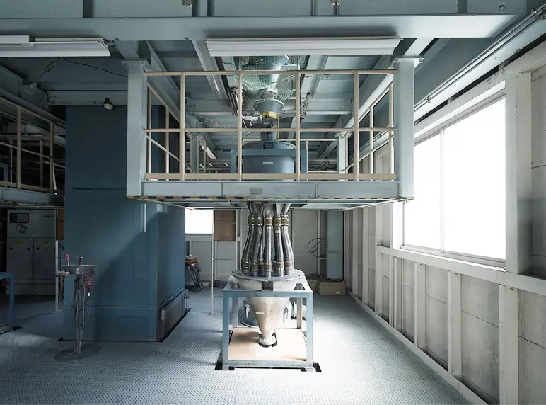
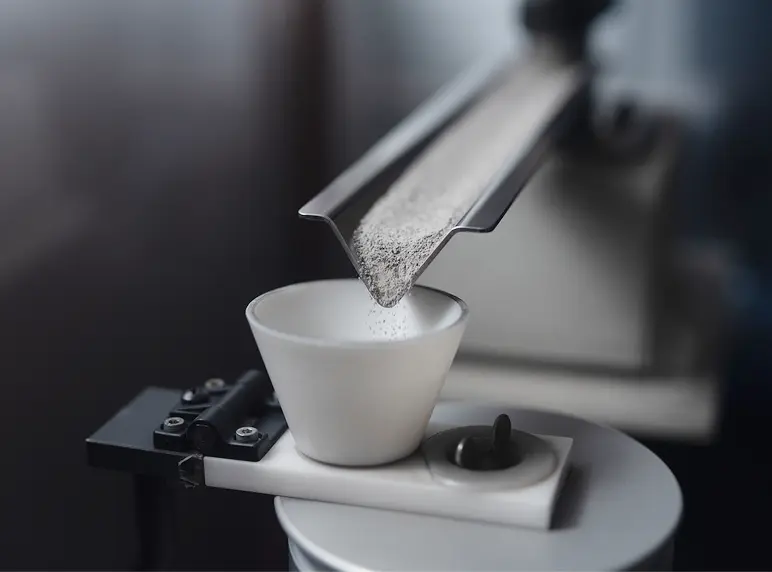
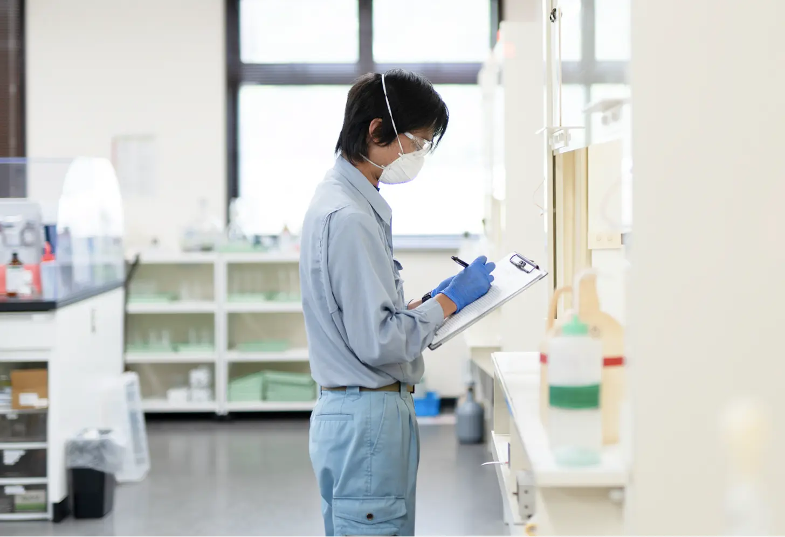
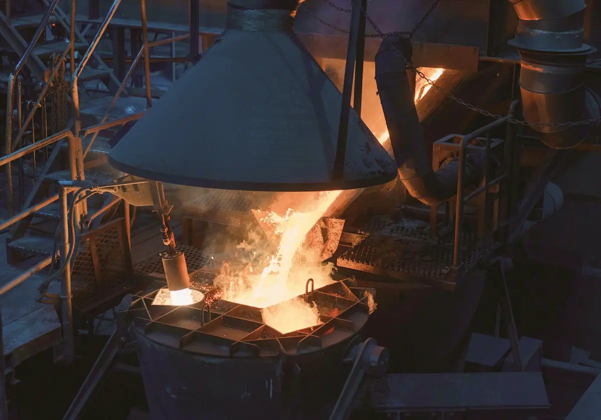
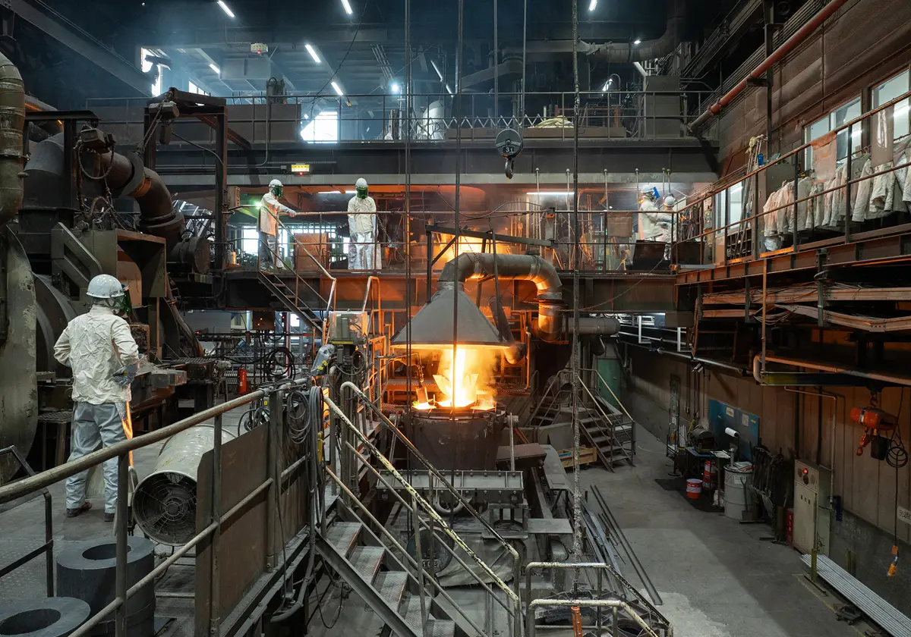
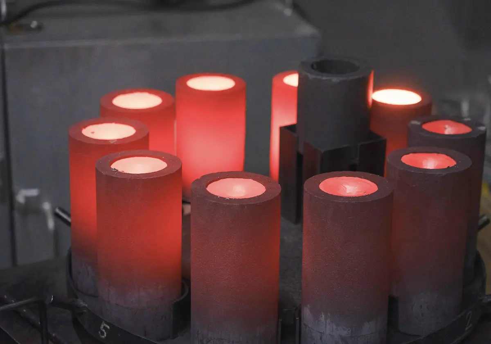

NIPPON PGM’s Expertise in Sampling, Assaying, and Smelting
NPGM Expertise
Sampling
Trust Begins with Accurate Sampling
In PGM recycling, where even the slightest variation can affect material valuation, sampling accuracy is essential. NIPPON PGM uses multiple sampling lines tailored to the characteristics of each material to obtain representative, unbiased samples. Backed by decades of expertise, NIPPON PGM supports transparent, accurate, and reliable material valuation.




Analysis
Analysis Backed by Extensive Expertise
The analysis supporting NIPPON PGM’s material valuation is performed by DOWA TECHNO RESEARCH CO., LTD., a specialist analytical laboratory with extensive experience in materials analysis. Drawing on its expertise in PGM, environmental, and metallurgical analysis, DOWA TECHNO RESEARCH evaluates a wide range of materials and provides accurate, reliable, and objective analytical data.

High-Precision ICP Analysis
Complex materials require precise analysis. By combining ICP (inductively coupled plasma) analysis with other advanced analytical techniques, DOWA TECHNO RESEARCH accurately determines the composition and precious metal content of a wide range of materials. Its advanced analytical capabilities and extensive expertise deliver reliable and reproducible data that supports fair and transparent material evaluation.
Smelting
#01
One of the World’s Largest PGM Recycling Smelters
NIPPON PGM’s proprietary ROSE Process is a low-energy, high-efficiency PGM recovery technology jointly developed by DOWA Metals & Mining Co., Ltd. and Tanaka Precious Metal Technologies Co., Ltd. With a processing capacity of approximately 1,000 metric tons per month, the ROSE Process efficiently handles a wide range of PGM-bearing materials while maintaining high energy efficiency.
KEYPOINT
- Processes a Wide Range of PGM-Bearing Materials
- Processing Capacity of Approximately 1,000 Metric Tons per Month

#02
High-Efficiency Recovery of Platinum Group Metals
Conventional smelting routes often require multiple processing steps before PGMs can be recovered, resulting in longer processing times. NIPPON PGM’s dedicated PGM smelting facilities enable fast and efficient recovery. Combined with low-energy operation and large-scale processing, these capabilities support competitive PGM recycling services.
KEYPOINT
- High-efficiency recovery through dedicated PGM smelting facilities
- Environmentally conscious operation supported by large-scale processing

#03
Returning Platinum Group Metals to the Market
Through the ROSE Process, the precious metal content of the material is increased to approximately 60%, producing a copper alloy suitable for final refining. The material is then refined by Tanaka Precious Metal Technologies Co., Ltd. into high-purity PGMs. This closed-loop process returns valuable platinum group metals to the market and supports the sustainable use of finite resources.
